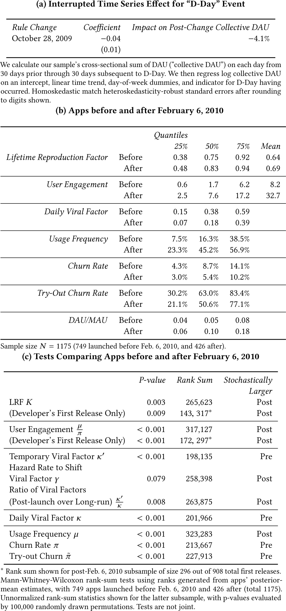

This is a web copy of https://doi.org/10.1145/3178876.3186123. Published in WWW2018 Proceedings © 2018 International World Wide Web Conference Committee, published under Creative Commons CC By 4.0 License. The modifications from the original are solely to improve HTML aiming to make it Findable, Accessible, Interoperable and Reusable. augmenting HTML metadata and avoiding ACM trademark. To reference this HTML version, use:
Permalink: https://w3id.org/oa/10.1145/3178876.3186123
DOI: https://doi.org/10.1145/3178876.3186123
WWW '18: Proceedings of The Web Conference 2018, Lyon, France, April 2018
While apps on the whole increasingly drive and shape present-day Web usage, they individually thrive and fall based on rich patterns of user adoption and long-term engagement. In studying these patterns at the population level, researchers remain curtailed by practical difficulties in accessing consistently detailed data covering large, representative cross-sections of apps. We address this challenge by proposing an empirical framework for analyzing an app's patterns of adoption and engagement. Importantly, our approach requires obtaining only an app's daily, weekly, and monthly usership time-series data, which are popular metrics tracked and made available for many apps. Modeling how the nuanced co-dynamics of an app's daily, weekly, and monthly usership measures (DAU, WAU, and MAU) reliably reveal user adoption and repeat engagement, we extend and demonstrably improve on the predictive performance of prior install- or DAU-based methods. To further study the mechanisms by which successful apps cultivate their userbases, we position apps along the dual axes of viral adoption and retentive engagement as mechanisms to potentially explain success. Applying our approach to data on Facebook apps, we show that these apps over time became less viral and more engaging. Interestingly, despite their diminished virality, their improved user retention subtly and counter-intuitively boosted these apps’ rates of new user adoptions through user-activity-based word of mouth, because an engaged user contributes to word of mouth over a longer period of time. In a final case application, we introduce evidence that developers of apps that learn to successfully retain their users carry this valuable experience over into their new apps.
ACM Reference Format:
Haim Mendelson and Ken Moon. 2018. Modeling Success and Engagement for the App Economy. In WWW 2018: The 2018 Web Conference, April 23–27, 2018, Lyon, France. ACM, New York, NY, USA 10 pages. https://doi.org/10.1145/3178876.3186123
The burgeoning app economy, where users consume content and services from software applications accessed through the online or mobile Web, increasingly drives today's social communications and economic growth. Communities and services increasingly develop as apps or migrate online: Google Play and Apple's App Store currently offer over 2.8 and 2.2 million apps, respectively, while App Annie projects 2017 app revenues to exceed USD 82 billion. Spotify's music streaming service, Zynga's games, and HealthTap's healthcare service exemplify apps’ impressive breadth as a predominant form of Web activity.
At the same time, multiple researchers (e.g., [26]) have commented on the scarcity of empirical opportunities to examine apps as a complete ecosystem, and the consequent limitations on our knowledge of apps’ population structure. Just as importantly, this empirical gap also impedes researchers from further investigating how and why apps and their population structure evolve over time, while heavily influencing how users engage on the Web.
To close this gap, our study first proposes a methodology to reliably extract an app's user adoption and engagement rates from apps’ commonly tracked, aggregate daily, weekly, and monthly usage logs (denoted DAU, WAU, and MAU for the Daily, Weekly, and Monthly Active User log counts, respectively), by jointly considering their time series under a unified Hidden Markov modeling approach. By doing so, our work extends prior DAU-based life cycle analyses in several essential ways that we discuss subsequently in-depth. Most visibly, our methods substantially boost performance in predicting apps’ success, especially when utilizing histories of abbreviated durations realistic for useful forecasting in practice.
Extending prior compartmental models of interacting populations ([30], [31], [35], [36]), our model interprets an app's DAU, WAU, and MAU time series as jointly evolving observables emitted by a stochastic, Hidden Markov process representing the app's patterns of adoption and usage. By design, our model notably does not suffer the convergence issues that have afflicted prior applications of compartmental SIRS models in predictive studies of app outcomes ([26]). By considering daily, weekly, and monthly usage logs jointly, our approach improves on prior installs- or DAU-based methods both in predictive performance and in empirically identifying the underlying usage patterns that reveal the mechanisms driving app success.
Precisely this question of what drives apps’ success in the Web environment attracts broad interest today. To characterize the mechanisms of how apps succeed and fail, we measure and organize apps along the dual dimensions of viral adoption and retentive engagement, where each is a potential mechanism to explain success. For online services such as apps, social media referrals and critique increase in importance and word of mouth scales up to create “viral” effects in acquiring new users ([1], [14], [19]). Consequently, substantial attention has centered on the value and practice of viral user acquisition (see, e.g., [27]), as a determinant of success influenced by an app's viral features, which generate its actions (e.g., generating invites, postings to newsfeeds) to convert current user activity into new referral acquisitions. At the same time, retention plays an important role to sustain userbases and communities, while generating developer revenues ([13],[17], [22], [26]).
Under this framework, we study a dataset recording user logs for a broad cross-section of Facebook apps from late-2008 to early-2012 to find that this app population has starkly lost virality while gaining in retentive user engagement. A natural experiment, dubbed “D-Day,” suppressed viral user acquisition across the Facebook platform, yet created an opening for developers to demonstrate how enhancing an app's user engagement can potently amplify its acquisition of new users. The underlying mechanism is straightforward but often underappreciated: even when an engaged user makes referrals relatively infrequently, she contributes relatively many referrals over her longer tenure of using the app.
As a final case study, we present evidence of a potent experience curve that rewards developers’ experience in engaging users, after accounting carefully for survivorship bias, platform growth, heterogeneity, and ecosystem effects that can otherwise skew a population-level analysis. When comparing developers at our sample's 25th and 75th percentiles of experience by usage count, the experienced developer's newly released app produces on average 0.35 more successful word-of-mouth referrals from each arriving potential user. This translates roughly into a 35% greater chance that each arrival sources a new user to take her place through word of mouth. Experience with more engaged users delivers an additional premium: standing at the 75th instead of the 25th percentile in past track-record of user engagement adds yet another 6% on top. Lastly, successful, serial developers tend to be those that excel in user engagement, not in viral features.
Since the Bass model [7] positing adoptive “innovators” and “imitators,” a large, interdisciplinary literature has addressed the word-of-mouth adoption of new products and services, with rich applications to online settings ([5], [27]). For activities on the Web, empirical work has focused on measuring the causal efficacy of viral features and impressions in influencing adoptions ([1], [6]). In contrast, our paper considers how viral effects may substitute or interact with user engagement to influence the success of apps, which as growing hubs of Web activity rely critically on both adoptions and usage. We explore these questions to add to understanding of Web-based user activities at a population level ([26], [32]). Relatedly, the science of predicting diffusions and lifecycles has advanced in recent years ([5], [10], [26], [33], [35], [36]). We add to this stream an approach to better leverage existing data at the population level and to more reliably infer the mechanisms of successful growth. We build on model-based approaches to interpreting behavioral patterns in user data (e.g., [18], [35], [36]), where further developing such modeling may offer untapped potential ([23], [25]). Notably, while [11] study how a Facebook rule change (prior to that of our first case study) affected app ratings, our methodology reveals how successful apps’ mechanisms usage and adoption patterns changed over time.
We collected our dataset from the Developer Analytics (DA) website that provides developers with usership data for a comprehensive cross-section of Facebook (FB) apps. Daily for each FB app, the time-series data consist of the counts of unique Daily Active Users (DAU), Weekly Active Users (WAU), and Monthly Active Users (MAU) represented in the app's log within our sample period from January 29, 2008 to February 6, 2012. These metrics are routinely tracked, used, and reported at an aggregate level by FB and many other platforms.
The DA measures are constructed as follows. FB defines a user, once having granted permissions to an FB app, to be “active” at a given time via a number of “activity sources,” which include using the app by FB log-in or in ways that access the FB API, including invites or postings to Newsfeeds. DAU, WAU, and MAU then tally unique users who were active within their relevant timeframes, looking back from the time the measure is recorded.
The DAU data are available throughout our sample period. DA started compiling the WAU and MAU measures on August 15, 2008. Purveyors of FB app data commonly source their data from the public FB Graph API. We corroborated DA's data with extensive data from an independent provider, AppData, finding only minor variation consistent with time-of-day differences in sampling the API. The usership measures are global, without geographical restriction, as is our sample of FB apps.
After filtering for apps with sufficient data for our analysis, our resulting sample of viable data consists of 1,175 apps from 908 developers, of which 303 developers launched multiple apps during the overall sample period and 107 launched multiple apps after August 15, 2008, once WAU and MAU became observable. Developers classified their apps using FB's genre categories and subcategories. Table 1 shows the breakdown of our sample into the nine available categories, as well as those left uncategorized. 42.9% of our sample classifies as Games, with the next largest category, Lifestyle, comprising 7.5%. Basic summary statistics for the sample and its three largest categories are presented in Table 2. For each app, we compute its average DAU over its observed life, to clearly evidence an upward skew suggesting that high-performing apps draw a highly disproportionate share of overall DAUs. We similarly derive each app's lifetime average ratio of DAU over MAU (the “DAU/MAU ratio”), a widely adopted industry metric for tracking either user engagement or “stickiness.”
| Business | 17 | ||||
| Education | 26 | ||||
| Entertainment | 58 | Music | 17 | ||
| Friends & Family | 15 | ||||
| Games | 504 | Simulation | 95 | Action | 63 |
| Just For Fun | 57 | Quizzes | 22 | ||
| Lifestyle | 88 | Events | 23 | ||
| Sports | 13 | ||||
| Utilities | 57 | Communication | 35 | ||
| None | 340 | ||||
| Sample size N = 1175. Categories voluntarily designated; “none” where unspecified. | |||||
| Overall | Games | Lifestyle | Entertainment | |
|---|---|---|---|---|
| Average DAU | ||||
| Sample Mean | 172K | 189K | 78.7K | 86.5K |
| Sample Median | 327 | 1.62K | 20.5 | 55.6 |
| Average DAU/MAU | ||||
| Sample Mean | 0.293 | 0.518 | 0.102 | 0.086 |
| Sample Median | 0.071 | 0.090 | 0.059 | 0.062 |
| Observed Life in Days | ||||
| Sample Mean | 735 | 788 | 916 | 831 |
| Sample Size N | 1175 | 504 | 88 | 58 |
Instead of relying on installs or daily usage logs alone, our model fully utilizes an app's aggregated daily, weekly, and monthly usage logs to yield two primary benefits. First, the additional information available from observing the ratios of these three usage metrics and how the metrics co-vary proves critical in reliably uncovering adoption and usage patterns. Indeed, past studies, such as [16], have shown that daily user logs or installs data alone cannot accurately support inferences about underlying usage in settings where repeat usage occurs. Note that predictive studies such as [35] can afford to stay agnostic on this point even while impressively predicting success using daily usage logs alone, because a predictive model need not always distinguish the precise mechanism underlying a success. Indeed, successful DAU trajectories may prove relatively similar under certain alternative mechanisms. In our later case study, we investigate precisely how the usage mechanism underlying success in a population of apps shifted markedly over time, from viral adoptions to engagement. Such an effort requires empirical identification about usage patterns from the app's DAU, WAU, and MAU jointly. Second, consistent with the notion that daily, weekly, and monthly usage logs are together highly informative, our model's use of this full data enhances predictive performance.
In this section, we first (A) derive an app's stochastic user flows from a model of underlying usage behaviors and then (B) for our empirical study, relate such flows to the aggregated usership logs we collect as data.
Consider a prospective user whose first try-out of an app (an “arrival”) occurs on a day t. Her try-out use results in try-out churn with probability $\tilde{\pi }$ ; with complementary probability $1-\tilde{\pi }$ , she instead adopts the service. A decision to adopt implies that she joins the service's stock of adopting users (or simply “users”) at the beginning of day t + 1.
For users who have adopted, the manner in which they repeat usage of the app characterizes their engagement. Accordingly, on each day t following adoption, the user uses with the Bernoulli probability μ (the app's “usage frequency,” with usage defined at the daily level). Independently, she departs with Bernoulli probability π (its rate of “churn”). Specifying churn and try-out churn distinctly in this way enjoys well-documented empirical precedence from observing apps’ user cohorts in practice (e.g., [38], [26]). If a user both visits and churns on a date, we assume that her visit takes place first. Intuitively, an engaged user exhibits both high usage frequency μ and low churn π. We summarize engagement by lifetime user engagement, $U:=\frac{\mu }{\pi }$ , which we define as a user's expected total instances of usage after adopting the app.
In the app economy, referrals are facilitated by viral features, which are the mechanisms (e.g., generating invites, postings to newsfeeds) by which an app converts its users’ activity into new referrals ([1]). With viral features, an engaging user elevates on his or her network the propensity for adoption, much as the contagious interactions of an infected individual in epidemiology imparts a propensity for new infections on his or her social network during his or her infection. Congruent with precendents including the Bass model and [35] and with the predominant influence of weak ties ([20]) on FB ([1], [6]), we model viral impressions assuming that each FB user engages in a fixed (or independently stationary) expected number of contacts per unit time with random mixing. An app's users are assumed negligible relative to the FB platform, of size Nt , with robustness checks supporting this assumption.
Consequently, each use of the app generates in expectation κ (the app's “daily viral factor”) new arrivals on the following day, as the product of the user's contact impression rate and the conversion rate of impressions into actual arrivals. Therefore the daily viral factor measures an app's virality, by capturing how its viral features contribute to user adoptions.
We develop further notation to aggregate usage behaviors into flows. At the beginning of day t, the app has Qt users. During day t, the app acquires At arrivals who try out and may adopt. Then, accounting for try-out and churn behavior, the expected user stock Q t + 1 conditional on the day t state is given by:
For the arrival flows At , different sequences or combinations of events can lead to an arrival. Any arrival may be the result of contributions from not only viral features but also the developer's marketing efforts. Following the standard approach (e.g., Bass model), we additionally specify an externally sourced arrival process as autoregressive of order one, to flexibly capture first-order correlations in the developer's marketing efforts and other trends. We restrict the autoregressive model's constant term to zero to reflect the long-run dissipation of the developer's marketing and other external drivers of impressions. The autoregressive decay parameter, β, may be interpreted to reflect the developer's ability to sustain an external stream of arrivals. The random variable, $A^{(Arr)}_t \le A_t$ , denotes these externally sourced arrivals on day t.
The expected viral arrival rate on day t is:
Finally, we allow an app's viral factor to differ initially following its launch, as apps may experiment with features for market feedback, be released within early-adopter subpopulations or at a lower initial price point, or pay FB for heavier marketing. To accommodate variation in early virality, we allow the daily viral factor to take a temporary value κ′ for a randomly determined period of time. On each day following the launch, with the Bernoulli probability γ the daily viral factor transitions permanently from κ′ to its long-term value κ.
| Try-out churn rate | $\tilde{\pi }$ |
| Usage frequency | μ |
| Daily churn rate | π |
| Daily viral factor | κ |
| Post-launch daily viral factor | κ′ |
| Transition rate to daily | γ |
| Baseline arrival AR(1) | β |
A key quantity driving an app's user flows is its Lifetime Reproduction Factor (LRF), which reports how each arrival contributes in expectation to the app's future arrivals, which are its potential users. Consequently, the LRF signals the app's overall capacity to sustain itself through word of mouth. In epidemiology, e.g., [9], the basic reproduction number captures a similar idea.
Consider a fresh arrival (who may or may not adopt at try-out) and her “offspring” as the subsequent arrivals, if any, attributable to her word-of-mouth referrals. We define LRF, denoted by K, as:
Our model of user behavior implies a corresponding time-series model of the app as a stochastic process. We add the following definitions to clarify. First, we decompose the stock of active users, Qt , by their respective dates of last usage, with Qt (k) denoting the stock of users who most recently used the app prior to t on day (t − k), i.e., k days ago. For notational convenience, we also define the residual sum $Q_t(k+):= \sum _{j=k}^{\infty } Q_t(j)$ , representing the user stock whose duration since last use is at least k days. Each random variable Ct (k) records the population that: (A) has churned as of the start of date t, and (B) last used the service exactly k days prior. Lastly, DAU t , WAU t , and MAU t denote the usership counts observed on date t.
We present the app's state-space representation. The app's state on date t is the vector:
The matrix T is applied to the current state to obtain the next day's expected state, based on the dynamics defined in Section 3.1, and we replace κ with κ′ while temporary viral effects are in play:
The vector of stochastic, mean-zero error terms, $\overrightarrow{\eta }_t$ , is derived by carefully accounting for the following underlying sources of stochasticity in usage and the resulting correlations in how the state $\overrightarrow{v}_t$ evolves: (A) of externally sourced arrivals; (B) of viral arrivals; (C) of post-adoption usage by each user segment Qt (k); and (D) of the churn in each user segment. We lay out $\overrightarrow{\eta }_t$ explicitly in terms of its component shocks in our extended paper.
Completing the state space model, an observation equation specifies the observed random variables as linear functions of the contemporaneous, latent state vector:
A long-run, covariance-stationary distribution exists for this system if and only if the state equation's matrix T is of spectral radius less than unity. T’s characteristic polynomial is:
Under the long-run daily viral factor, an FB app is a covariance-stationary stochastic process if and only if β < 1 and K < 1.
Our extended paper derives a last stability condition to control the volume of viral arrivals under temporary viral effects. Together, we call these the “stability conditions,” without which the expected number of viral descendants from a single arrival is infinite. Because we do not observe unlimited growth for apps over extensive horizons, we assume the stability conditions bind on our sample.
To learn apps’ parameters, we employ a hierarchical model extending our time-series model of app-level usage patterns to a population. Under this scheme, each observed app, characterized by its vector of behavioral parameters, is independently drawn from a multivariate distribution governed by population hyperparameters. We learn these population hyperparameters from the data by maximum likelihood applying Hidden Markov techniques. Post-estimation, we also derive the posterior distribution of each app's parameters, based on Bayesian updating from its individual time-series data.
Our Simulated Maximum Likelihood estimation procedure samples a set of candidate parameters to describe an app, whereupon we use the Kalman Filter to evaluate the associated log likelihood given the observed DAU, WAU, and MAU sequences. Specifying the population distribution as a multivariate Gaussian that is truncated to enforce the stability conditions a priori, we implement Gibbs sampler and importance sampling algorithms for efficient simulation. Computational procedures and details are covered in our extended paper.
Our primary methodological contribution demonstrates that, unlike installs or daily usage data alone, the nested structure of the contemporaneous daily, weekly, and monthly usage log counts affords novel visibility into apps’ user flows and allows us to reliably infer how and when an app's users adopt, use, and leave its services. We therefore address empirical identification in a setting where users make repeat usages of a service, i.e., where existing frameworks such as the Bass model cannot offer credible inferences from aggregated, daily usage or sales data alone (see, e.g., [16]). Importantly, we demonstrate our methodology's out-of-sample predictive performance against both theoretical and statistical benchmarks.
To preface with intuition, consider that DAU as a share of WAU, once adjusted for new arrivals, strongly signals usage frequency, revealing how many of the past week's users also engaged the app today. A frequently used game then exhibits a substantially higher share than a personal finance app used weekly or bi-weekly. Exploiting the time dimension, co-movements of the daily, weekly, and monthly metrics are highly informative about adoptions and churn: for instance, a new arrival contributes a simultaneously positive co-movement across all three measures, which is unlikely otherwise. As a technical matter, for state-space models such as ours, local identification is formally confirmed as part of the estimation procedure.
We compare our model's predictions to those of the Bass model and a vector autoregressive model in Table 4. Our model outperforms both alternatives in rolling-horizon, out-of-sample tests. For each prediction horizon, we obtain rolling predictions for an app's observed time series by re-estimating each model using the app's data only through a rolling cut-off date. For instance, to predict at a five-day horizon, we estimate each model using the app's data through its 100th day to predict for the 105th day; next, we likewise re-estimate each model through the 101st day to obtain predictions for the 106th, and so on. Table 4 shows, representatively for the apps of Zynga (the largest developer by DAU in our dataset, producing in the Games genre), how our model compares in mean squared error (MSE): the ratios of the competing model's MSE over our model's MSE are shown across a range of horizons.
Of the comparisons, the Bass model serves as a conceptual benchmark from the literature. We use a well-accepted extension which further allows for repeat, post-adoption usage by past adopters and requires for its estimation daily usage data, i.e., DAU. Table shows that our model substantially outperforms the Bass model across the board. This happens for two primary reasons. First, by definition, the Bass model cannot use our nested usage data. Second, each adopter remains permanently influential for the Bass model's word-of-mouth, as it cannot separately model churn. [28] re-parameterize the Bass model to incorporate the effects of churn, but using this model would not change the MSE comparisons in Table as the estimation models remain essentially the same. MSE are not scaled against usership, thus the Bass model's performance appears worse for Zynga's popular apps than for 15 randomly sampled apps.
Vector autoregressions (VAR) serve as an empirical benchmark exploiting the data atheoretically. While VAR accommodate any covariance-stationary time series given sufficient data, our model outperforms VAR (Table) as its theory-driven constraints prevent overfitting. As expected, VAR predict quite well for the shortest, e.g. five-day, horizons but severely underperform in predicting for moderate to long horizons, with comparatively egregious MSE. For the results shown in Table 4, we use 100 days as the minimum estimation period in our rolling cut-offs; with shorter estimation periods, e.g. 50 days, VAR perform poorly for even the shortest horizons as overfitting becomes increasingly problematic. As before, Table 4’s MSE comparisons for 15 randomly sampled apps reinforce these patterns. Notably, VAR predicts outcomes more accurately for Zynga apps than for the random sample, leveraging WAU and MAU to draw information from Zynga apps’ larger userships, yet underperforms our approach.
Finally, our forecasts are relatively accurate. For instance, for Zynga's ‘CityVille’ app, a social game averaging over 15 million DAU, our mean absolute forecast error is 1.7 (2.0) million at a one-month (3-month) horizon without adjusting for seasonality. For the random sample, the mean absolute 30-day error is 43 thousand.
| (a) Compare against Bass Model with Repeat Usage (MSE Ratios for Bass over Our Model) | ||||||||
|---|---|---|---|---|---|---|---|---|
| Zynga Apps | ||||||||
| DAU | Horizon (Days) | |||||||
| 5 | 20 | 50 | 100 | 150 | 200 | 250 | 300 | |
| 10% Quantile | 1.8 | 1.4 | 1.1 | 2.7 | 2.0 | 1.9 | 1.9 | 2.6 |
| 25% Quantile | 5.7 | 3.7 | 3.8 | 3.8 | 3.6 | 3.2 | 3.0 | 3.1 |
| Median | 8.9 | 8.0 | 6.9 | 7.8 | 7.6 | 6.6 | 9.1 | 9.5 |
| 75% Quantile | 2.4 × 1015 | 1.8 × 1015 | 1.0 × 1015 | 34 | 30 | 37 | 37 | 39 |
| 90% Quantile | 5.3 × 1020 | 3.3 × 1020 | 1.4 × 1020 | 5.3 × 1019 | 4.6 × 1019 | 4.4 × 1019 | 3.7 × 1019 | 3.5 × 1019 |
| Random Sample | ||||||||
| DAU | Horizon (Days) | |||||||
| 5 | 20 | 50 | 100 | 150 | 200 | 250 | 300 | |
| 10% Quantile | 1.5 | 1.9 | 0.9 | 0.6 | 0.6 | 0.5 | 0.5 | 0.4 |
| 25% Quantile | 3.3 | 2.7 | 1.5 | 0.9 | 0.7 | 0.6 | 0.5 | 0.5 |
| Median | 6.1 | 2.9 | 1.9 | 2.1 | 1.2 | 1.1 | 1.1 | 1.1 |
| 75% Quantile | 10.3 | 4.7 | 6.8 | 137 | 1.9 | 1.7 | 1.8 | 1.9 |
| 90% Quantile | 10.7 | 10.6 | 44.2 | 709 | 1,772 | 2,675 | 3,511 | 4,368 |
| (b) Compare against Vector Autoregressions (MSE Ratios for VAR over Our Model) | ||||||||
| Zynga Apps | ||||||||
| DAU | Horizon (Days) | |||||||
| 5 | 20 | 50 | 100 | 150 | 200 | 250 | 300 | |
| 10% Quantile | 0.1 | 0.2 | 0.7 | 1.8 | 2.8 | 5.5 | 1.2 | 1.8 |
| 25% Quantile | 0.1 | 0.5 | 1.2 | 4.7 | 5.8 | 17 | 8.9 | 22 |
| Median | 0.3 | 1.3 | 3.1 | 68 | 23 | 90 | 158 | 730 |
| 75% Quantile | 0.9 | 2.1 | 16 | 3.5 × 105 | 3.9 × 109 | 4.1 × 1013 | 2.5 × 106 | 9.1 × 107 |
| 90% Quantile | 2.3 | 140 | 2.6 × 107 | 4.2 × 1016 | 3.8 × 1025 | 7.6 × 1033 | 9.5 × 1043 | 1.0 × 1053 |
| Zynga Apps | ||||||||
| MAU | Horizon (Days) | |||||||
| 5 | 20 | 50 | 100 | 150 | 200 | 250 | 300 | |
| 10% Quantile | 0.1 | 0.6 | 1.1 | 3.2 | 2.8 | 5.5 | 1.8 | 2.4 |
| 25% Quantile | 0.1 | 0.9 | 2.2 | 5.9 | 8.2 | 16 | 10 | 9.4 |
| Median | 1.2 | 1.2 | 4.7 | 54 | 21 | 73 | 205 | 764 |
| 75% Quantile | 2.2 | 3.5 | 20 | 2.0 × 105 | 2.0 × 1013 | 2.0 × 1014 | 1.2 × 106 | 4.1 × 107 |
| 90% Quantile | 3.1 | 82 | 1.5 × 107 | 2.0 × 1016 | 1.8 × 1025 | 2.3 × 1033 | 4.3 × 1043 | 4.7 × 1052 |
| Random Sample | ||||||||
| DAU | Horizon (Days) | |||||||
| 5 | 20 | 50 | 100 | 150 | 200 | 250 | 300 | |
| 10% Quantile | 0.2 | 0.5 | 0.9 | 1.1 | 3.7 | 146 | 1.6 × 104 | 1.3 × 106 |
| 25% Quantile | 0.3 | 0.8 | 0.9 | 3.8 | 29.5 | 1,457 | 1.6 × 105 | 1.3 × 107 |
| Median | 0.6 | 0.8 | 1.6 | 592 | 8.4 × 105 | 1.7 × 109 | 4.4 × 1012 | 2.8 × 1016 |
| 75% Quantile | 0.9 | 1.0 | 188 | 3.1 × 107 | 9.1 × 1014 | 7.0 × 1020 | 4.7 × 1027 | 4.3 × 1034 |
| 90% Quantile | 1.0 | 3,391 | 8.0 × 1010 | 7.4 × 1024 | 1.8 × 1039 | 4.5 × 1052 | 3.1 × 1066 | 1.4 × 1081 |
| Random Sample | ||||||||
| MAU | Horizon (Days) | |||||||
| 5 | 20 | 50 | 100 | 150 | 200 | 250 | 300 | |
| 10% Quantile | 0.3 | 0.5 | 0.7 | 0.8 | 2.0 | 10.5 | 332 | 3.0 × 104 |
| 25% Quantile | 0.4 | 0.8 | 1.2 | 1.5 | 13 | 98 | 3,312 | 3.0 × 105 |
| Median | 0.7 | 1.0 | 2.6 | 43 | 4.6 × 104 | 1.0 × 108 | 2.1 × 1011 | 1.3 × 1015 |
| 75% Quantile | 1.4 | 1.1 | 5.8 | 8.1 × 105 | 1.1 × 1011 | 7.8 × 1018 | 4.4 × 1025 | 8.3 × 1030 |
| 90% Quantile | 2.0 | 11 | 5.6 × 109 | 3.4 × 1023 | 1.9 × 1035 | 3.4 × 1051 | 7.9 × 1065 | 2.5 × 1078 |
| We use the 13 Zynga apps satisfying a 100-day minimum estimation period, totaling 8820 days of observations, and 15 randomly sampled apps, totaling 11,341 days. We obtain rolling-horizon predictions from: (a) our model, averaging posterior projections; (b) the Bass model allowing repeat usage, estimated on DAU by nonlinear least squares; and (c) vector autoregressions, using DAU, MAU, and the DAU/MAU ratio (14 lags) to reflect common practice. We show (by column, the apps’ cross-sectional distribution of) ratios of MSE for the competing model over ours. Thus a ratio greater than one indicates the competing model's larger MSE. | ||||||||
Based on our learned estimates, we supply the app distribution's means, marginal quantiles, and most salient correlations in Table 5. For our sample's median app, users exhibit a daily usage rate of 25% and churn in about 11 days. Roughly half of the app's new arrivals decline to adopt on try-out.
Temporary, post-launch viral effects (captured by the post-launch viral factor) are short-lived. While an app's temporary viral effects may substantially out-muscle its long-run viral effects, in these cases viral features typically turn out to be ineffectual in the long run. The expected time for temporary viral effects to dissipate is less than a month for over 68% of the population. This duration tends to be shorter for apps with stronger long-run viral features.
Perhaps surprisingly, strong user engagement tends to develop in the absence of potent viral features for our sample of viable apps achieving at least 500 MAU. A strong, negative relationship between users’ usage and the strength of viral features presents the most striking correlation (− 0.49 using posterior sampling) emerging from our data. Users of highly viral apps tend to churn more quickly, including at try-out. To illustrate the variety in engagement even across well-known, successful apps, contrast Zynga's ‘FarmVille’ to music-streaming service ‘Spotify’: we measure their ability to replace current users at 0.98 and 0.99 in LRF, respectively, yet they differ starkly in lifetime user engagement (19.4 versus 56.6) due to average user retentions of 31 and 133 days under our estimates. Naturally, user engagement strongly associates with retention: we see a negative correlation of − 0.3 between apps’ usage frequencies and churn rates.
The antipathy between viral features and engagement tends even stronger (correlation: − 0.77) for the 376 high-growth apps with LRFs exceeding 0.9, suggesting that apps succeed through either viral features or user engagement, but not both. Indeed, the same features that make an app more viral in garnering widespread impressions may cause it to be less engaging or appealing, perhaps spammy, to users following their initial exposures.
| Quantiles | ||||
|---|---|---|---|---|
| Mean | 25% | 50% | 75% | |
| Baseline Arrival AR(1) $\hat{\beta }$ | 0.63 | 0.46 | 0.67 | 0.85 |
| Expected Duration in Days | ||||
| of Temporary Viral Effects $\frac{1}{\hat{\gamma }}$ | 115.2 | 11.5 | 19.1 | 37.5 |
| Post-Launch Daily Viral Factor $\hat{\kappa ^{\prime }}$ | 0.34 | 0.11 | 0.27 | 0.52 |
| Daily Viral Factor $\hat{\kappa }$ | 0.34 | 0.08 | 0.33 | 0.55 |
| Usage Frequency $\hat{\mu }$ | 29.9% | 10.8% | 25.3% | 44.9% |
| Churn Rate $\hat{\pi }$ | 10.5% | 5.1% | 9.1% | 14.6% |
| Try-out Churn Rate $\hat{\tilde{\pi }}$ | 51.9% | 22.8% | 51.4% | 82.6% |
| Lifetime Reproduction Factor $\hat{K}$ | 0.56 | 0.31 | 0.63 | 0.83 |
| Lifetime User Engagement $\hat{\frac{\mu }{\pi }}$ | 20.7 | 2.3 | 5.8 | 19.5 |
| Select Population Correlations: | $\kappa , \tilde{\pi }$ : | 0.38 | κ, π: | 0.40 |
| γ, κ: 0.48 | κ, m: | − 0.38 | μ, π: | − 0.31 |
| γ, m: − 0.14 | κ, κ′: | 0.48 | $\pi , \tilde{\pi }$ : | − 0.23 |
| κ, μ: | − 0.51 | |||
| Simulated sample of 7500 draws from the estimated population distribution. | ||||
We leverage our dataset's visibility into usage and adoption patterns over a broad collection of apps to conduct a pair of case studies.
In Section 5.1, we first describe a natural experiment arising from a set of rule changes that suppressed apps’ viral features on the FB platform on a date dubbed “D-Day.” D-Day created a unique opening to show how user engagement can instead drive successful apps and draw new users. Section 5.2’s case study shows that developers possessing excellent track records in user engagement became those that continued to successfully release new apps after D-Day, and even on dates other than D-Day. In surprising contrast, these same to-be-serial developers performed historically no better than their (relatively more viral) peers in user acquisition up to that time. Contrary to common wisdom, we show how high user engagement emerged as the prevalent and very effective mechanism by which developers continued to acquire new users following D-Day.
For our second case study, Section 5.3 provides evidence that app developers harness a potent experience curve that allows them to translate their accrued experience servicing engaged users into improved user acquisition in their newer app releases.
The timing of a particularly significant set of rule changes on the FB platform permits us to study the effect of permanently dampening apps’ viral features. On October 28, 2009, popularly dubbed “D-Day” by the press, FB announced a slew of new policies to rein in viral notifications and messages sent by apps on its platform, especially communications that were reaching FB users who had not adopted the app. Specifically, these policies included introducing algorithmic filtering into the Newsfeed by which users receive content and relegating app notifications to a sidebar rather than the platform's primary notifications pop-up ([3]). FB also expressed its intent to act in its discretion against indiscriminate or “spammy” behavior by developers promoting their apps.
We use an interrupted time series analysis to confirm that D-Day suppressed viral impressions on FB. We track the total DAU obtained by aggregating cross-sectionally across all the developers in our sample on each date from thirty days prior to thirty days subsequent to the D-Day event. Controlling for a linear time trend and day-of-week seasonality, a regression is used to estimate the rule changes’ effect. As shown in Table 6a, we find with statistical significance that D-Day depressed the sampled apps’ collective DAU by 4%. Since we would not expect D-Day rules to substantially alter usage behavior, we attribute this outcome to heavily suppressed viral impressions and acquisitions that would otherwise have been generated by viral features.
Our model's app-level estimates support this finding: individual daily viral factors plummet over our sample period. To compare apps over time, we define February 6, 2010 as our “cut-off” date, which falls exactly two years prior to the end of our sample period and slightly more than three months after D-Day. To contrast apps launched before and after the cut-off, Table 6b displays their distributions of apps’ posterior-mean behavioral parameters. Across this split, the median app's daily viral factor, capturing how the app converts its user activity into new referrals, declines markedly by 47%. Post-launch viral factors likewise dropped, as developers became less able or willing to exert efforts to temporarily boost their apps’ post-launch virality. These post-launch effects are short-lived, expected to last under a month for over 68% of the population. Formally, we conduct a Mann-Whitney-Wilcoxon rank-sum test of the one-sided alternative hypothesis that a particular subsample of daily viral factors, identified pre-test, stochastically dominates: in our case, we test whether viral effects have declined over time. We transparently assign to each app a numerical rank derived from ordering them by the size, smallest to largest, of their daily viral factors, and the rank-sum test statistic reveals whether the post-cut-off subsample contains especially smaller ranks. The simple and transparent Mann-Whitney-Wilcoxon test, exact in level, yields statistically significant findings.
Table 6c statistically validates that both types of viral effects have weakened: the temporary and long-run viral factors are each stochastically larger for the pre-cut-off subsample at p-values smaller than 0.001. The depth of the fall-off when apps’ temporary, post-launch viral effects dissipate tends to be larger after the cut-off (p-value 0.01).
Thus, D-Day's rule changes weakened viral features to hurt apps’ viral acquisitions and growth. On the other hand, these new rules did not directly alter how apps are used. (Moreover, the very modest dip in try-out churn further suggests that apps’ post-D-Day engagement did not arise solely from reaching smaller subsets of engaged “core” users.) We now turn to study how app developers adjusted user engagement following D-Day.
|  |
By opening alternatives to viral acquisition, D-Day yields unique evidence to illuminate the benefits of investing in user engagement. We first highlight two intuitive statistics about these benefits and then turn to our empirical tests.
First, to-be-serial developers consistently tend to excel in user engagement, reflected in their apps’ higher lifetime user engagement than for their developer peers. For selected dates including D-Day, Table 7 presents the past track records in LRF (i.e., word-of-mouth acquisition) and lifetime user engagement of all developers that released an app within the 100 days prior. For each date, the table then compares these to the same track records compiled for only the subset of developers that went on to release another app within the next year. In this way, we compare successful serial developers to their peers in terms of how they have done in word of mouth and user engagement in the past. Perhaps surprisingly, Table 7 shows that to-be-serial developers have never stood out against their peers in LRF. In stark contrast, the influence of user engagement on serial development appears to have strengthened over time, although the gap peaks mid-sample around D-Day when only the developers exhibiting the highest user engagement levels went on to repeat. In short, successful serial developers cultivate user engagement over pure acquisition.
Second, serial developers rapidly enhance their apps’ user acquisition rates after investing in user engagement. Table 7 also presents how much serial developers improved their new apps’ LRFs against their prior track records. These improvements jumped post-D-Day, when user engagement become more important to developers. In Section 5.3, we argue that user engagement indeed drives potent experience-curve effects.
As shown in Table 6b, our model estimates corroborate that apps drastically improved user engagement following D-Day. Contrasting apps launched before and after the cut-off, median usage frequency rocketed from 16% to 45%, while median retention translates to 61% longer expected user lifetimes. Similarly, DAU/MAU ratios for new apps rose precipitously. The Mann-Whitney-Wilcoxon rank-sum tests in Table 6c confirm statistical significance at p-values smaller than 0.001. Relatedly, the median LRF rose by over 0.07, i.e., a user's probability of replacing herself prior to churning grew by approximately 7%, statistically significant at p-value 0.01.
Lastly, perhaps by hiring experienced personnel from successful incumbents or through spillover effects, standards for new entry rose. Considering developers’ first releases in Table 6c, later new entrants exhibited higher LRFs (p-value 0.01) and higher user engagement (p-value less than 0.001).
In sum, following D-Day, both serial developers and new entrants invested heavily to cultivate user engagement and achieved net improvements in acquiring new users despite viral suppression.
| All Developers | |||
| Releasing App in 100 Days | Median Track-record | ||
| Prior to: | LRF | User Engagement | |
| January 1, 2009 | 0.72 | 1.5 | |
| October 28, 2009 (D-Day) | 0.83 | 6.8 | |
| January 1, 2011 | 0.78 | 6.2 | |
| To-be-serial Developers | |||
| (Subset of Above) | |||
| Also Releasing New App | Median Track-record | Median | |
| in Year After: | LRF | User Engagement | △ LRF |
| January 1, 2009 | 0.72 | 1.6 | 0.05 |
| October 28, 2009 (D-Day) | 0.84 | 11.9 | 0.01 |
| January 1, 2011 | 0.72 | 7.8 | 0.18 |
| By a developer's “track-record” LRF or lifetime user engagement, we mean its average in the metric over all past releases prior to a given date. △ LRF shows how much (net) the next-year release improves LRF relative to the developer's past track record. | |||
Experience curves (alternatively, learning curves) enjoy long-standing attention across disciplines, in diverse settings across manufacturing ([39], [4], [29], [2], and [8]) and services ([12], [24], [37], [34]). Experience may prove even more valuable online, where even off-the-shelf analytics extensively track user flows to improve developers’ future offerings ([15]).
To assess this hypothesis, we importantly account carefully for survivorship bias, genre and developer heterogeneity, platform growth, and ecosystem effects, as each of these can bias the results of a population-level analysis. Because we observe multiple apps each for a subset of our developers, we employ a dynamic panel with fixed effects to distinguish how developers exploit experience from the influence of developers’ unobserved attributes. To illustrate, consider that a serial developer that releases a sequence of well-performing apps may be leveraging its accumulating experience or may instead possess persistent, underlying characteristics causing its apps to be successful.
For each developer, we are interested in the progression of the LRFs achieved for its apps, and particularly whether a developer's accumulation of experience gives it an edge in future user acquisition. For developer j’s n-th app (n ≥ 2), we specify the dynamic relationship:
We conduct our empirical analysis using the maximum likelihood (ML) estimator of [21]. To correct for the bias induced by sample attrition (as developers, especially those performing poorly, choose to exit our sample), we apply inverse probability weighting appropriate under relatively natural selection-on-observables assumptions. Our extended paper elaborates on our assumptions and choice of estimator.
We present our results as specification (1) in Table 8. Both the past-learning coefficient on the developer's prior-release performance and the experience coefficient on the developer's accrued DAU are statistically significant, with each doubling of a developer's accrued DAU translating into a 0.03 increase in the LRF of its newly released app. To demonstrate the economic import, moving from the 25% to the 75% quantile in observed experience projects a gain of 0.35 in the new LRF. Approximately, each new arrival to the app is additively 35% more likely to generate his or her own word-of-mouth replacement. Ultimately, this translates into a 6% increase in app lifespan for each doubling of the developer's cumulative DAU experience.
We estimate two extensions. The first, specification (2) in Table 8, contemplates that a new app's growth may be explained by current users of the developer's broader portfolio or ecosystem, which we can track as the developer's total portfolio DAU. As Table 8 shows, we do not find a significant ecosystem effect. Lastly, we find a significant engagement premium on experience. While experience itself remains valuable, additionally moving from the sample's 25% to the 75% quantile in observed user engagement further boosts the next app's LRF by 0.06, further increasing an arrival's probability of word-of-mouth replacement by approximately 6% additively.
| Specification | (1) | (2) | (3) | |
|---|---|---|---|---|
| Past-Performance Effect $\hat{\theta }$ | 0.437** | 0.404** | 0.411** | |
| (0.198, 0.684) | (0.123, 0.665) | (0.188, 0.658) | ||
| Experience Effect $\hat{\lambda }$ | 0.040* | 0.061** | 0.044* | |
| (0.002, 0.069) | (0.018, 0.123) | (0.006, 0.074) | ||
| Portfolio Ecosystem | — | − 0.037 | — | |
| Effect $\hat{\zeta }$ | (− 0.102, 0.007) | |||
| Engaged User Experience | — | — | 0.005** | |
| Effect $\hat{\psi }$ | (0.002, 0.011) | |||
| Estimated Gain in LRF | ||||
| Q75 vs.Q25 Experience | 0.35* | 0.53** | 0.38* | |
| * and ** denote one-sided statistical significance at 5% and 2.5%, respectively. Sample: 107 developers that launch 2+ apps post-August 15, 2008, once WAU and MAU recorded. DAU from apps launched prior to August 15, 2008 are included in experience and ecosystem effects. Inverse probability weighting adjusts for sample attrition by release cohort (i.e., first releases, second releases, etc.). For sufficient cohort size, we use each developer's releases up through its fifth, for a total of 309 apps. Two-sided, 90% confidence intervals from panel bootstrap with 10,000 re-sampling instances. | ||||
*An extended version of this paper is available online: http://dx.doi.org/10.2139/ssrn.2777764
This paper is published under the Creative Commons Attribution 4.0 International (CC-BY 4.0) license. Authors reserve their rights to disseminate the work on their personal and corporate Web sites with the appropriate attribution.
WWW '18, April 23-27, 2018, Lyon, France
© 2018; IW3C2 (International World Wide Web Conference Committee), published under Creative Commons CC-BY 4.0 License. ACM ISBN 978-1-4503-5639-8/18/04.
DOI: https://doi.org/10.1145/3178876.3186123